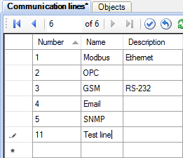
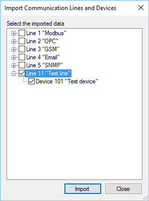
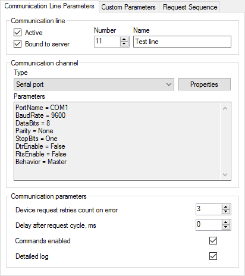
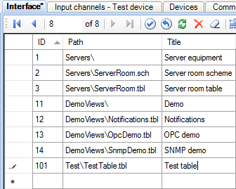

Figure 1. Adding an object
This article describes how to configure communication with devices using Modbus protocol. Simple and robust, Modbus has since become a de facto standard communication protocol, and it is now a commonly available means of connecting industrial electronic devices (see Wikipedia). Rapid SCADA supports Modbus RTU, ASCII and TCP modes.
The general sequence of configuring:
The following is a step by step guide to setup a new Modbus device. To ensure that the process of adding the device completely coincides with the text of the article, you have to install Rapid SCADA with the default configuration.
Editing the configuration database is performed using the Administrator application.
Run Administrator. Open the Objects table and add a new line for the object 2 "Test object" (see Figure 1). Then open the Communication lines table and add the line 11 "Test line" (see Figure 2). After that open the Devices table and add the device 101 "Test device" (see Figure 3).
Fill the following fields for the device (see Figure 3):
| Device type: | Modbus |
| Address: | Modbus address of your device, for example, 1 |
| Call number: | IP address, if the device is connected via Ethernet. Otherwise, blank |
| Communication line: | "Test line", which was recently created |
Figure 1. Adding an object

Figure 2. Adding a communication line

Figure 3. Adding a device
When editing the configuration database is completed, it is necessary to pass it to Server by clicking the button  . To apply the changes, restart the Server service with the button
. To apply the changes, restart the Server service with the button  .
.
Run Communicator (exact its graphical shell). At this time the Server service must be running.
Right-click on the Communication Lines tree node and choose the Import communication lines and devices item of the context menu (see Figure 4). In the window that appears, tick the created line and device, and then click the Import button (see Figure 5). Communication line and device appear in Communicator.

Figure 4. Communication lines context menu

Figure 5. Choosing devices for import
Click the Line 4 "Test line" tree node to open the Communication Line Parameters page, set up a communication channel, such as a serial port. Tick the Commands enabled checkbox if sending commands to the device is required (see Figure 6).

Figure 6. Communication line properties
The following table contains typical serial port parameters depending on the protocol type.
| Modbus RTU | Modbus ASCII | Modbus TCP |
|---|---|---|
| 8 data bits, Even parity, 1 stop bit |
7 data bits, Even parity, 1 stop bit |
- |
| 8 data bits, No parity, 2 stop bits |
7 data bits, No parity, 2 stop bits |
- |
In RTU and ASCII modes a baud rate of all the devices of a communication line has to be the same. Specify this baud rate in the serial port properties. Using different Modbus types within a one line is not allowed.
Go to the Request Sequence page and select "Test device" row in the table (see Figure 7). If device polling time and period are not specified, the devices are polled cyclically. Commands are sent immediately after a poll is completed.

Figure 7. Device request sequence
Click the button  to open device properties form (see Figure 8). In the form choose the type of Modbus protocol, which have to be specified in the device manual.
to open device properties form (see Figure 8). In the form choose the type of Modbus protocol, which have to be specified in the device manual.

Figure 8. Device properties
Press the  button to select an existing device template, or click
button to select an existing device template, or click  to create a new template. When the create button
to create a new template. When the create button  or the edit button
or the edit button  is clicked, Device Template Editor is shown (see Figure 9). This article uses the existing template KpModbus_Adam6015.xml.
is clicked, Device Template Editor is shown (see Figure 9). This article uses the existing template KpModbus_Adam6015.xml.

Figure 9. Device template editor
Device template reflects the structure of Modbus packages. Requested data are combined into groups of elements. Each group has its name, data table, start address and element count. Each element is a tag of a device. Rapid SCADA identifies a tag by its signal number. A command is described by its name, data table and address. A command number identifies the command within Rapid SCADA.
Names of groups, elements and commands are arbitrary. The available data tables and element addresses are usually described in device manual. Depending on the manufacturer, addressing of elements can be zero-based or one-based, specified as decimal or hexadecimal numbers. By default, addresses start with 1 and represented as decimals. To switch template addressing, click the  button. Template settings dialog is opened (see Figure 10).
button. Template settings dialog is opened (see Figure 10).

Figure 10. Template settings
To save Communicator settings click the  button. Now it is recommended to start the Communicator service with the
button. Now it is recommended to start the Communicator service with the  button and check communication with the device.
button and check communication with the device.
Click Device 101 "Test device" tree node to check the device state and the availability of data (see Figure 11). The data is not available immediately after start, retrieved values are shown when the first polling complete.

Figure 11. Device data
In case of losing communication with the device, use a communication line log to analyze the problem cause. To open the log, click the Communication Line Stats tree node and go to the Communication Line Log page. Data packages can be decoded by Online Modbus Parser.
After communication with the device is established, create input channels and output channels in the configuration database. To do this, open Administrator again.
The automatic channel creation service helps to save a time. Click Service > Create Channels in the main menu of the application.
On the form, which is shown in Figure 12, choose "Test line" in the drop down list, then tick the "Test device" row and choose "Test object" in the cell of the Object column. Set the channel numbering parameters to create channels having convenient numbers. Firstly press the Calculate channel numbers button, then press Create.

Figure 12. Creation of channels
The channels are created automatically based on the device template that has been created and assigned to the device in the previous section of this article. To view created channels, click the Input channels > Test device tree node and the Output channels > Test device node. It is recommended to manually fill in the Quantity and Unit fields of the input channels and the Command values field of the output channels. However, in the case of the first experiment it is unnecessary.
Useful to understand that the input channels are bound to the device tags using the Signal field. The output channels are bound to device commands in accordance with the Command number field.
After editing the configuration database is complete, press the button to pass the changes to Server, and then restart Server and Communicator by and  buttons.
buttons.
Open the Device Data page in Communicator and make sure that the input channels are bound to the device tags – the Channel column must contain numbers of the created input channels (see Figure 13).

Figure 13. Device data bound to channels
As a result of described actions, data should be collected from the device and stored in the archive. It remains to customize user interface for an operator.
Consider creating a table view for the Webstation application. To do this, the Table Editor application is needed. If displaying data in a graphical view is required, use Scheme Editor instead of Table editor.
Open Table Editor and fill in the table view as shown in Figure 14. Add a channel in the table (from the left side of the window to the right) by clicking the  button, double-clicking the channel row or by pressing Enter.
button, double-clicking the channel row or by pressing Enter.
Save created table view in the TestTable.tbl file in the C:\SCADA\Interface\Test folder. Please note that folder names and file names of views must contain only Latin characters.

Figure 14. Table editor
To display a table view in Webstation, define it in the Interface table of the configuration database by the Administrator application as shown in Figure 15.

Figure 15. Adding a view in the Interface table
To apply the changes, send the database to Server by the button and restart the Server service by the button.
Now start your browser and enter the address http://localhost/scada/. On the login form use admin / 12345 (see Figure 16). If the configuration carried out correctly, after logging in, you will see a table with the data obtained from the device, similar to Figure 17.

Figure 16. Login form

Figure 17. The Webstation application
Received element values may need a conversion. A device template allows choosing a number of bytes used by an element and order of bytes. These settings define an initial conversion. An additional conversion, if needed, is performed by SCADA-Server based on formulas of input channels in the configuration database.
The simplest conversion is a proportional which is described by the following formula:
X * (B - A) / 2N + A, where A and B are the bounds of the element values range, N – number of bits in value, X – received value.
Another commonly used conversion is two’s complement. See Wikipedia for the details. Formulas can be defined inline in input channel rows of the configuration database or separately by using the Formulas table. Using of formulas is described in this section.